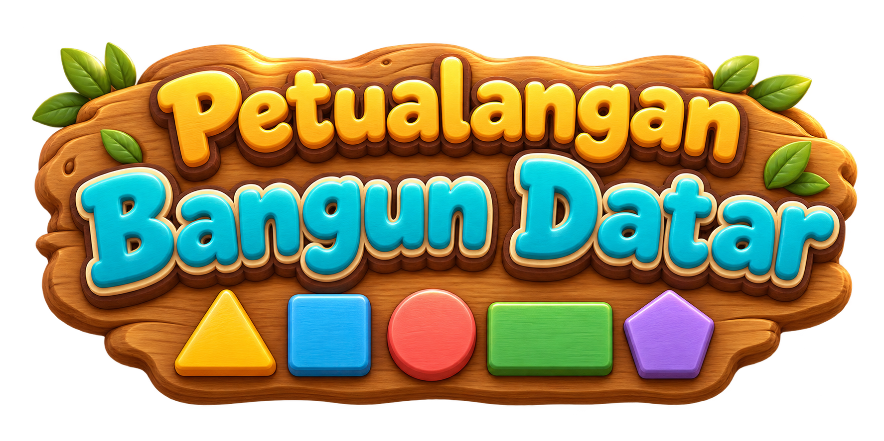

Temukan BendaCari tiga benda sesuai bentuk yang diminta. Klik benda dalam gambar. Lingkaran hijau berarti benar, merah berarti coba lagi.
Puzzle Bangun DatarGeser keping dari kanan ke papan kosong di kiri. Keping akan menempel jika posisinya benar.
Ayo MencocokkanTarik garis antarkartu yang berpasangan, atau pilih satu kartu di setiap sisi.
Selesaikan lima level pada tiap game untuk melihat hasil akhirmu.
Tampilkan pilihan level dan tombol gambar atau sesi baru di dalam game.
Progres tersimpan di perangkat ini. Kamu bisa melanjutkan dari level yang belum selesai.